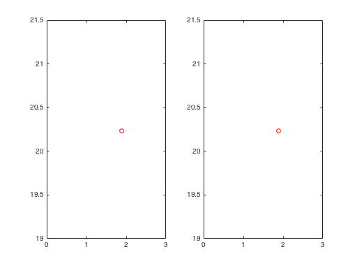

Fox's two-bar truss
Script to run SQP for Fox's two-bar truss (old-style foptions). Fox 1971, "Optimization Methods for Engineering Design," p. 12, 130-1, 145
Contents
Initialize variables
vlb = [1 10]; % Design variable lower bounds vub = [5 50]; % Design variable upper bounds x0 = vlb; % initial guess for design variables
Type 'help foptions' to see sqp function options explained
opt(9) = 1; % Check user-supplied gradients opt(1) = 2; % Display iteration history opt(2) = 0.05;% Tolerance for change in design variables opt(3) = 0.01;% Tolerance for change in objective function % design variable plot works only in older versions of MATLAB % when plot figure open warning('off','MATLAB:hg:EraseModeIgnored')
Schittkowsk's Sequential Quadratic Programming algorithm
Backward-compatible with Optimization Toolbox version 1.0
[xf,OPT,LAMBDA] = sqp('f2barFox',x0,opt,vlb,vub,'g2barFox') %#ok<NOPTS>
Function gradient
Maximum discrepancy between derivatives = 3.55801e-08
Constraint gradients
Maximum discrepancy between derivatives = 3.95361e-08
Termination Criteria
1e-06 0.01 0.05
-----------------------------------
f-CNT FUNC STEP NAC max{g} j KTO max(S)
3 19.869 0 6 2.32 1 27.7 1.27
4 32.911 1 6 0.827 1 17.8 4.9
5 37.506 1 6 0.264 1 11.3 3.21
6 41.463 1 6 0.0475 1 2.54 0.811
7 42.648 1 6 0.00214 1 0.121 0.0388
8 42.709 1 6 4.68e-06 1 0.000266 8.46e-05
9 42.709 1 6 2.23e-11 1 1.26e-09 4.03e-10
Optimization Terminated Successfully from sqp
xf =
1.8784 20.2369
OPT =
Columns 1 through 7
2.0000 0.0500 0.0100 0.0000 0 0 0
Columns 8 through 14
42.7087 1.0000 9.0000 7.0000 9.0000 0 6.0000
Columns 15 through 18
20.0000 0.0000 0.1000 0
LAMBDA =
1.0e+03 *
0.0187
2.4041
0.0000
0.0000
0.0000
0.0000
